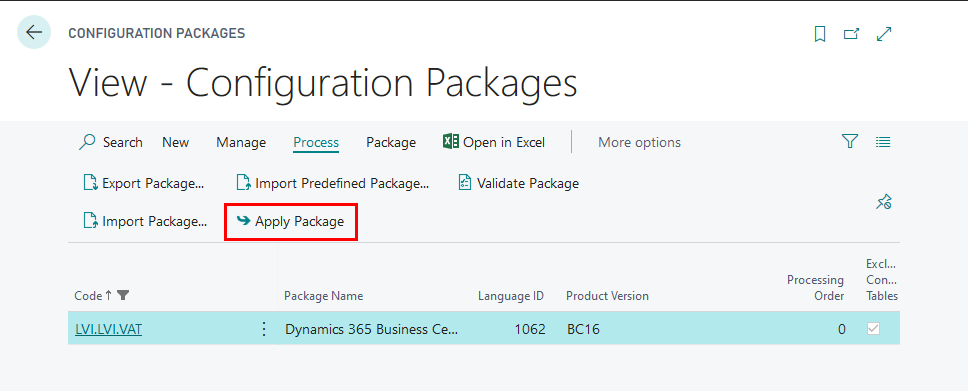

Get started
Role Center
In order to use VAT Reporting Localization for Latvia, no specific role center is required, because the functionality can be accessed via search pane.
Configuration package import
Basic necessary system setup for the use of VAT Reporting Localization for Latvia is created, when applying the configuration package LVI.LVI.VAT.
- Click on the button Search for Page or Report...

- Type Config. Packages and select Config. Packages from Pages and Tasks

- Select LVI.LVI.VAT package from list of Config. Packages and press Apply Package.

Configuration package ensures the following information:
- Countries/Regions and Country/Region Translations
- Currencies
- G/L Accounts (21900..21989|23910|52100..52989|57200..57290)
- General Business, General Product, VAT Business, VAT Product Posting Groups
- General Posting Setup
- VAT Clauses
- VAT Posting Setup
- VAT Statement Template
- VAT Statement Names
- VAT Statement Lines
- VAT Report Setup
- VAT Reports Configuration
- No. series
- No. series lines
Permissions Sets
Use of VAT Reporting Localization for Latvia require the following permission sets to be assigned per user or user group:
- LV_VB_VIEW – designed for viewing VAT Buffer List and selecting
- LV_VB_EDIT- designed for creating, editing and deleting VAT Buffer List
- LV_VAT- designed for exporting and printing VAT Statement and VAT Statement Appendix files
Pre-requisites
The following information should be completed after importing configuration package:
- Click on the button Search for Page or Report...
- Type Company information and select Company information from Tasks

Complete Company Information by entering:
- Name
- Address
- Post Code
- Country
- Registration No.
- VAT Registration No.
- Click on the button Search for Page or Report...
- Type General Ledger Setup and select General Ledger Setup from Administration

- By applying LVI.LVI.VAT configuration package, the General Ledger Setup shall be modified by adding VAT Statement Appendix related setup. The following information should be filled in VAT Buffer fast tab in General Ledger Setup, in order to ensure preparation of VAT Statement Appendixes:
- VAT Buffer Nos.
- Default Transaction Limit - enter a limit above which the transaction should be disclosed separately in VAT Appendix
- Business Type (w. Registration No.) - T
- Business Type (wo. Registration No.) - X
- Default Partner Limit - Specifies the threshold in LCY, above which individual transactions are lower than the threshold, but in the aggregate larger than the limit, must be splited by the partners
- Business Type (Partner) - V
- Report Document No. - External Document No.- Document No.
- Group Partner By - VAT Registration No.

Setup
VAT Report Setup
By applying LVI.LVI.VAT configuration package, the VAT Report Setup shall be be modified by adding VAT Statement related setup. The following information should be filled in Numbering fast tab in VAT Report Setup:
- No. series - set to PVNESPARD
- VAT Return No. - set to PVN-DEKL

VAT Report Configuration
By applying LVI.LVI.VAT configuration package, the VAT Reports Configuration shall be be modified by adding VAT Statement related setup. The following information should be filled:
- EC Sales List
- Suggest Lines Codeunit ID - 70151471
- Content Codeunit ID - 70151472
- Validate Codeunit ID - 143
- VAT Return
- Suggest Lines Codeunit ID - 70151474
- Content Codeunit ID - 70151473
- Validate Codeunit ID - 744

VAT Statement Template
By applying LVI.LVI.VAT configuration package, the VAT Report Configuration shall be be modified by adding VAT Statement related setup. The following information should be filled:
- VAT Statement Report ID - 70151475

VAT Statement Names
By applying LVI.LVI.VAT configuration package, the VAT Report Configuration shall be be modified by adding VAT Statement related setup. The following information should be filled:
- VAT Statement Name - "PVN2018"

VAT Statement Lines
By applying LVI.LVI.VAT configuration package, the VAT Report Configuration shall be be modified by adding VAT Statement related setup. The following information should be filled:
- VAT Statement lines for VAT Statement Name - "PVN2018"

How to use
How to use: VAT Buffer
Purpose: VAT Buffer is used in order to prepare VAT Statement Appendixes
- VAT 1-1 Local purchase disclosure
- VAT 1-2 EU purchase disclosure
- VAT 1-3 Local sale disclosure
Availability: can be accessed from Search for Page or Report…

Pre-requisites: In order to use the functionality, the following steps are required:
- VAT Buffer List - create New VAT Buffer

Complete General Fast Tab 2. VAT Buffer No. should come automatically from General Ledger Setup. If it is not completed, enter the VAT Buffer No. manually 3. Description - enter the description of the VAT Buffer, for example, "2020 January" 4. From Date - enter period starting date for which the VAT Statement Appendix is prepared 5. To Date - enter period starting date for which the VAT Statement Appendix is prepared

Complete Setup Fast Tab
- G/L Account No. Filter (inland) - enter VAT Accounts that are used for local purchase transactions and inserted in VAT Posting Setup as Purchase VAT Accounts
- G/L Account No. Filter (EU) - enter VAT Accounts that are used for EU purchase transactions and inserted in VAT Posting Setup as Purchase VAT Accounts
- G/L Account No. Filter (Sales) - enter VAT Accounts that are used for local sales transactions and inserted in VAT Posting Setup as Sales VAT Accounts
- G/L Account No. Filter (Sales 0%) - enter Sales Accounts that are used for sales transactions with zero VAT rate
- Transaction Limit - enter the limit of transaction amount, below which the individual transactions should be grouped together; this limit may be entered in General Ledger Setup
- Partner Limit - enter the limit of transaction amount, above which the transactions should be grouped per Partner; this limit may be entered in General Ledger Setup
- Report Document - select which document number is to be used as Report Document No. and disclosed in VAT Statement Appendix "External Document No., Document No." or "Document No."
- Group Partner By - select whether the entries should be grouped by VAT Registration No. or Company Registration No.

Create Lines
- In the Ribbon press "Suggest Lines" function and OK

- The VAT Buffer gets populated by transaction lines, that contain the following information:

Line Type - for VAT reporting purposes
- Inland
- EU
- Sales
Line No.- line number
G/L Entry No. - indicates GL entry number or is blank for several deals in one row
VAT Entry No.- indicate VAT entry number or is blank for several deals in one row
Posting Date - indicate posting date or is blank for several deals in one row
Document Date- indicate date of the document or is blank for several deals in one row
Transaction No. - indicate the number of transaction
Skip Entry- if checked, then entry is not included for VAT reporting
Report Document No. - number of the source document
Document No. - number assigned by NAV
External Document No.- external document number
LV Invoice No.- VAT Reporting Localization for Latvia invoice number
Document Type- indicates the type of the document
- Payment
- Invoice
- Credit Memo
- Finance Charge Memo
- Reminder
- Refund
Business Type- according to codes of Tax Administration
Invoice Is Custom Declaration- displays the invoice as customs declaration in VAT buffer
No Grouping - displays the selected entry without grouping
EU 3-Party Trade- indicates whether the deal is classified as third party trade
- Yes
- No
VAT %- indicates the VAT interest rate
VAT Declaration Line No. - indicates the VAT declaration line number
EU Service - indicates whether the deal is considered as service within EU
Vendor No. - vendor number from Vendor List
Customer No.- customer number from Customer List
Partner No.- Partner number, if transactions involve Companies that are considered as one VAT Group
Partner Name- Partner name
Partner VAT Registration No.- Partner VAT No.
Country/Region Code -
Base Amount (LCY)- VAT taxable amount in Local currency
VAT Amount (LCY)- VAT amount in Local currency
Amount (LCY) - total amount in Local currency
Currency Code - currency code
Currency Factor- exchange rate, if deal currency differs from local currency
Base Amount -
VAT Amount
Amount
Report Document Type
- Invoice
- Cash Payment
- Bank Payment
- Credit Memo
- Other
- Custom Declaration
Group Line No. - group line number within Group level
Grouping Level No. - group level number
System-Created- checked if line is suggested by VAT Reporting Localization for Latvia, unchecked if user made modifications to line

Note
Once the lines are created in VAT Buffer, they are not updated, if any postings are done within the period, that is collected inside the VAT Buffer. In order to update the lines in VAt Buffer it is required to press "Delete All Lines" in Ribbon, then press "Suggest Lines" once more.
Print VAT Statement Appendix
- VAT Buffer status needs to be set to Released, using "Release" button in the Ribbon.
- In the Ribbon press "Print VAT Appendix"
- Select "Prepared by" - the responsible employee, who prepared the VAT Statement Appendix from the list of Employees. By selecting "Prepared by", Employee card data are re-used: Name, Surname, Job title, Phone No.
- VAT Statement Appendix can be sent to Preview, PDF, Excel, Word.

How to use EC Sales List Reports
Purpose: EC Sales List Report is used in order to prepare VAT Statement Appendixes
- VAT 2 EU sale disclosure
- VAT 3 Correction of EU sale disclosure
Availability: can be accessed from Search for Page or Report…

Pre-requisites: In order to use the functionality, the following steps are required:
- EC Sales List Reports - create New EC Sales List Report

Complete General Fast Tab
- No. should come automatically from VAT Report Setup. If it is not completed, enter the No. Series manually
- Description - enter the description of the EC SAles List Report, for example, "2020 January"
- VAT Report Version - select approporiate EC Sales List Report Version
- VAT Report Type
- Standard
- Corrective
- Supplementary

Create Lines
- In the Ribbon press "Suggest Lines" function and OK

How to use: VAT Statement
Purpose: VAT Statement is used to set filters for VAT or General Ledger Entries, in order to prepare VAT Return.
Availability: can be accessed from Search for Page or Report…
Pre-requisites: In order to use the functionality, the following steps are required:
VAT Statement template - VAT Statement Report ID - 70151475 *Complete VAT Statement Lines" Open VAT Statements list, select "PVN2018" press "Edit VAT Statement" in the Ribbon. In VAT Statement lines it is required to keep the structure of the main VAT statement lines, according to LV local legislation.
Row No.– row no. for VAT Statement lines should match the State Revenue Service VAT statement lines; for lines that are used for additional calculations - any number can be used.
Description – entered description should match the State Revenue Service VAT statement lines; for lines that are used for additional calculation - free text can be used
Box. No. - this field should indicate to which State Revenue VAT Statement line does the calculated amount refer.
Type – indicates which entries are used for calculation. Following options are available:
- Account Totalling – used for filtering particular G/L entries
- VAT Entries - used for filtering of VAT entries
- Row Totalling - used for filtering of VAT Statement rows
- Description - used for rows without amounts
- Math - rows contains calculus, using Math Operator, Operand 1 and Operand 2; this type is used for calculating VAT Proportion
Row Totalling - if row type is set to Row Totalling, then here it is required to enter the rows
Account Totalling - if row type is set to Account Totalling, then here it is required to enter G/L Accounts
Amount type - if row type is set to VAT entries, then here it is possible to define
- Base Amount- for displaying taxable base amount
- VAT Amount- for displaying VAT amount
- Unrealized Base Amount- for displaying unrealized taxable base amount
- Unrealized VAT Amount- for displaying unrealized VAT amount
G/L Amount type - if row type is set to Account Totalling, then here it is possible to define
- Net change - for displaying net change
- Debit Amount- for displaying only debit amounts
- Credit Amount- for displaying only credit amounts
Math Operator - used for defining calculation type
- Add - returns row value of expression "Operand 1" + "Operand 2"
- Substract - returns row value of expression "Operand 1" - "Operand 2"
- Multiply - returns row value of expression "Operand 1" * "Operand 2"
- Divide - returns row value of expression "Operand 1" / "Operand 2" (if Operand 2 = 0, then returns 0)
- Calculate % - returns row value of expression "Operand 1" / "Operand 2" * 100 (if Operand 2 = 0, then returns 0)
- Use % - returns row value of expression "Operand 1" / "Operand 2" / 100
- Min - return the lowest value of Row Totalling
- Max - return the highest value of Row Totalling
Gen. Posting Type, Gen. Bus. Posting Group, Gen. Prod. Posting Group, VAT Bus. Posting Group, VAT Prod. Posting Group - fields for additional filtering by posintg groups
Print With - ensures possibility to print with opposite sign;
Round - ensures possibility to round numbers; 0.01 by default
Rounding type - nearest, upwards, downwards; fields is used for proportion calculation
Calculate with - ensures possibility to use opposite sign for calculation
Zero if - ensures possibility to show zero, if amount is negative or positive; to be used for VAT payable or VAT refund fields in VAT statement
Print - if checkmark is inserted, then statement line is printed